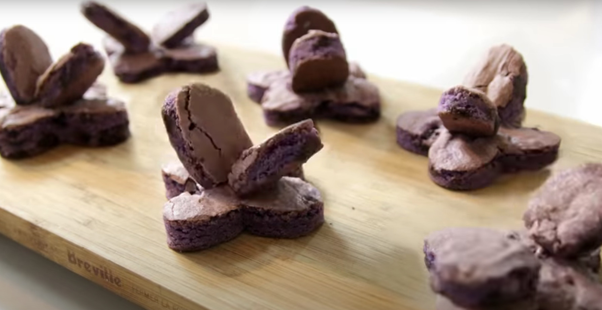

Burple nurples

Description
Burple nurples are a fictional dish from the 2000's cartoon
Chowder from Cartoon Network. They are some kind of a cake
with some kind of beautiful, funny plot point (like they
are the ones who eat people, I dunno).
Ingredients
- White cake mix
- Sugar
- Egg
- Milk
- Butter
- Choco chips
- Coriander
- Purple food coloring
Steps
- Stir together the ingredients
- Add food coloring
- Pour in choco chips
- Grease a baking pan
- Pour the mixture into the baking pan and put in the oven
- Mold them into shape
Back to home page